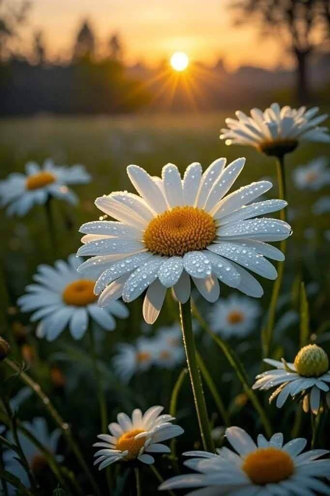
رمز البراءة والاخلاص . هي زهرة القلب الابيض ,تعبر ببساطة بتلاتها عن الصدق والنوايا الصافية . هي الزهرة التي تعيدنا الى طفولتنا وبساطة مشاعرنا , فوجودها في المكان يوحي بالثقة والوفاء
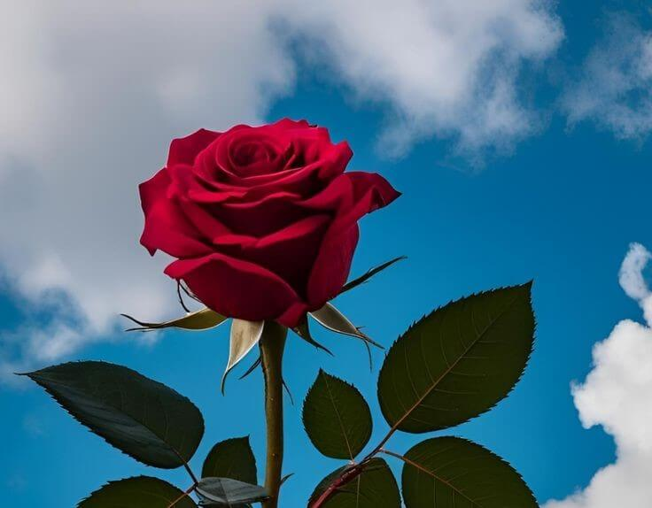
الجوري هو ملك الزهور وسيد العواطف يختصر معاني الحب والمودة بلونه الاحمر الدافئ , بتلاته المتراصة تحكي قصصا من المودة والتقدير تجمع بين الرائحة النفاثة والمظهر المخملي الذي يوحي بالفخامة والعمق
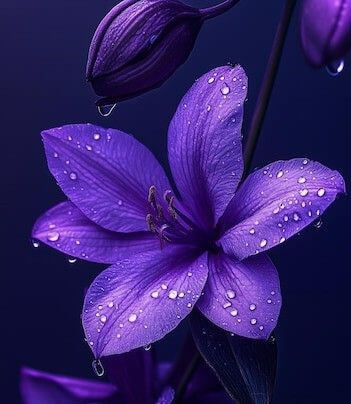
زهرة البنفسج تجمع بين اللون العميق والرائحة المستترة التي لا تظهر الا لمن يقترب منها بصدق تتميز بميل رأسها للاسفل قليلا مما جعلها تاريخيا رمزا للتواضع والكبرياء الصامت لكونها تجبرك على الانحناء لشم عطرها الساحر
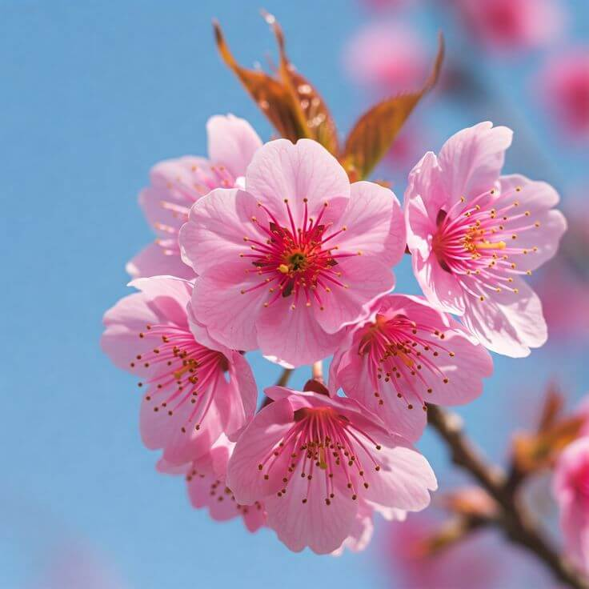
زهرة الساكورا الفلسفة الجمالية للشرق هي ليست مجرد زهرة تزهر في الشجر بل حدث ينتظره الناس كل عام تتميز بانها تزهر بكثافة مذهلة لتغطي الاشجار بغطاء وردي ساحر ثم تتساقط بتلاتها فجأة وهي في قمة جمالها هي تلعمنا ان الحياة ثمينة وقصيرة
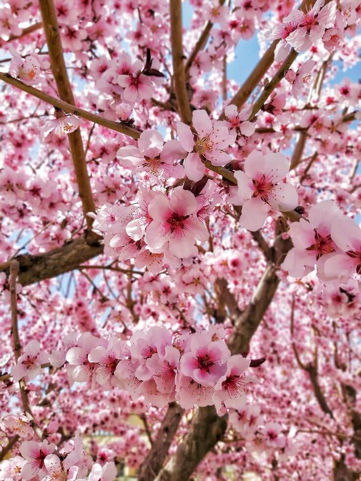
زهرة الكرز جمال اللحظة العابرة هي ايقونة الجمال الرقيق الذي يزدهر لفترة قصيرة ليعلمنا قيمة الوقت . لكنها تذكرنا ايضا بأن الجمال الحقيقي يكمن في تقدير اللحظةالحالية قبل ان تمضي . بتلاتها الوردية الناعمة التي تتطاير مع الريح تشبه الاحلام الجميلة التي تملأ الروح بالأمل
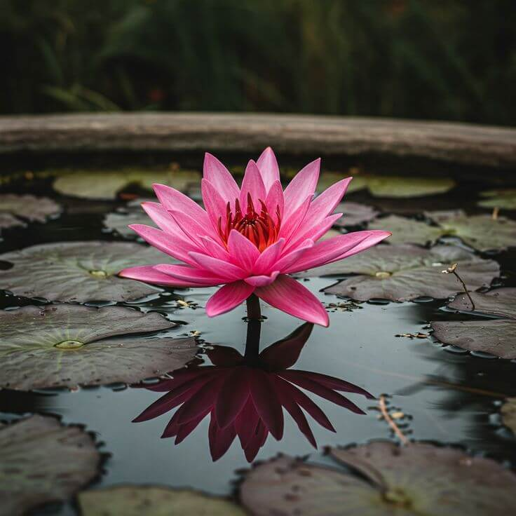
اللوتس رمز النقاء والطهارة ,تنبت من وسط الطين والمياه الراكدة لتخرج لنا بياضا ناصعا وجمالا فائقا . هي تعلمنا ان الظروف الصعبة لا تمنع الانسان من ان يكون نقيا وجميلا وان البدايات الصعبة قد تؤدي لنتائج مذهلة كما انها تعلمنا ان لا نحكم على الكتاب من مغلفه
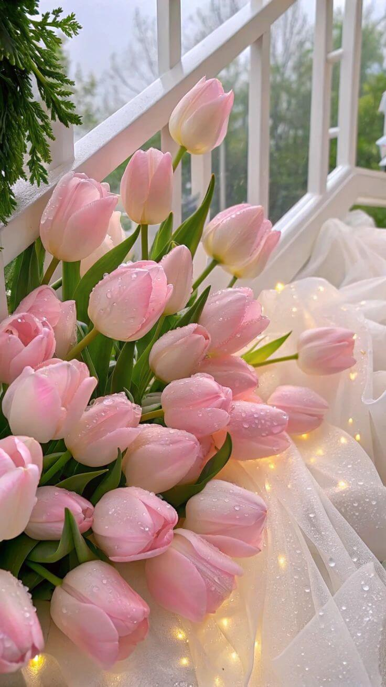
التوليب كبرياء الانوثة تتميز ازهاره بشكلها الخلاب الذي يشبه الكأس وهي تمثل التجدد والجمال المتوازن هي زهرة لا تتطلب الكثير لتلفت الانظار فمجرد وجودها في مزهرية يمنح المكان طابعا عصريا وراقيا
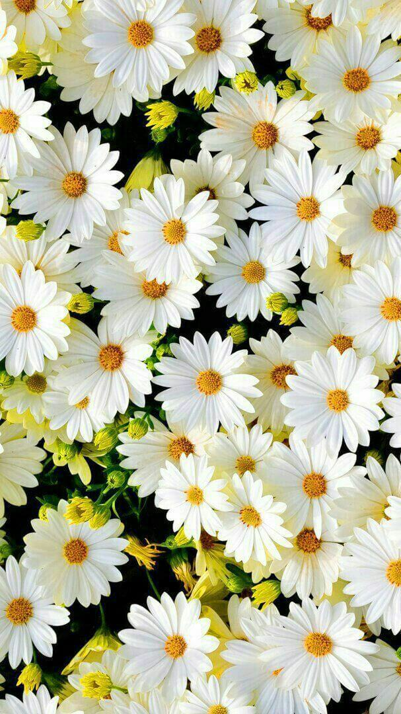
الياسمين هي زهرةالذكريات الهادئة فرائحته الفواحة قادرة على تغيير مزاج المكان بالكامل وهو يعبر عن البساطة والرقة ويخبرنا ان الاشياء الصغيرة والناعمة قد تترك اثرا في النفوس أقوى بكثير من الاشياء الفخمة
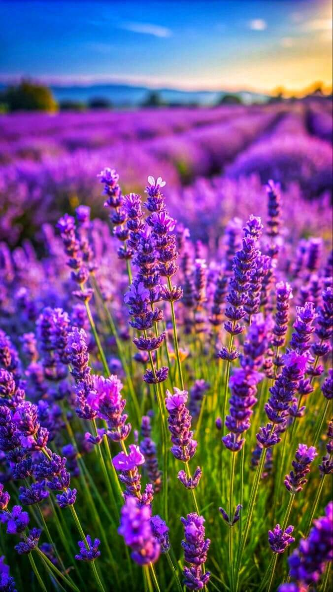
اللافندر هدوء الاعصاب,هو الصديق الوفي لمن يبحث عن الراحة في ضجيج الحياة ,بلونه البنفسجي الساحر ورائحته التي تستخدم لتهدئة الأنفاس تمثل هذه الزهرة التوازن النفسي والسكينة وكأنها دعوة للاسترخاء والتامل
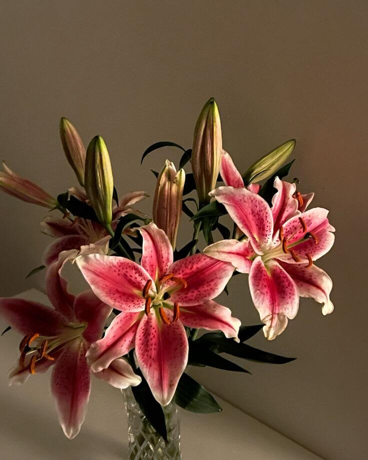
الليليوم او الزئبق رمز النبل والطهارة هي من اكثر الزهور رقيا وفخامة في العالم تتميز بشكلها الهندسي الفريد وبتلاتها الكبيرة التي تنفتح وكانها تعلن عن حضور ملكي وسمو أخلاقي تتميز برائحتها العطرية والنفاثة تملأ الاماكن الكبيرة وتضفي لمسة من الوقار
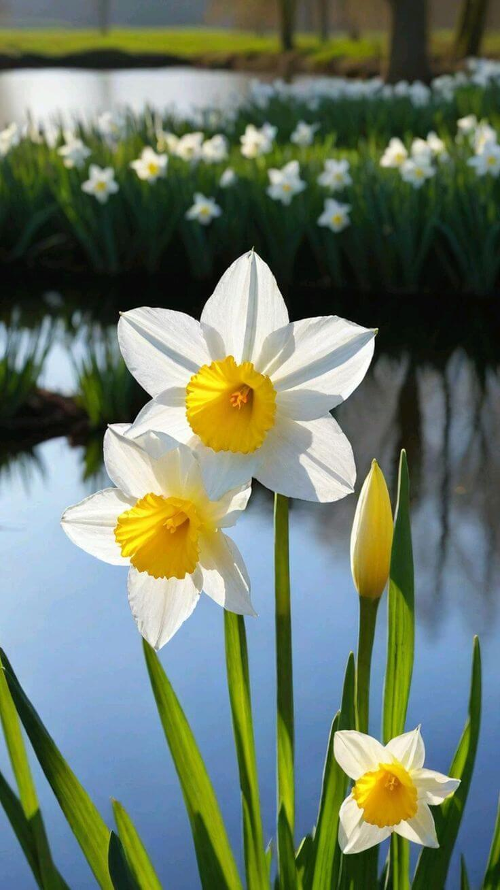
زهرة النرجس هي فارس الربيع هي الولادة الجديدة التي يعلن بها انتهاء الشتاء القاسي بلونه الأصفر الزاهي الذي يشبه أشعة الشمس هي ليست مجرد زهرة بل رمز البدايات الجديدة والتحول الايجابي ز يخبرنا النرجس ام بعد كل انتظار طويل هناك دائما لحظة اشراق تستحق منا ان نرفع رؤوسنا عاليا
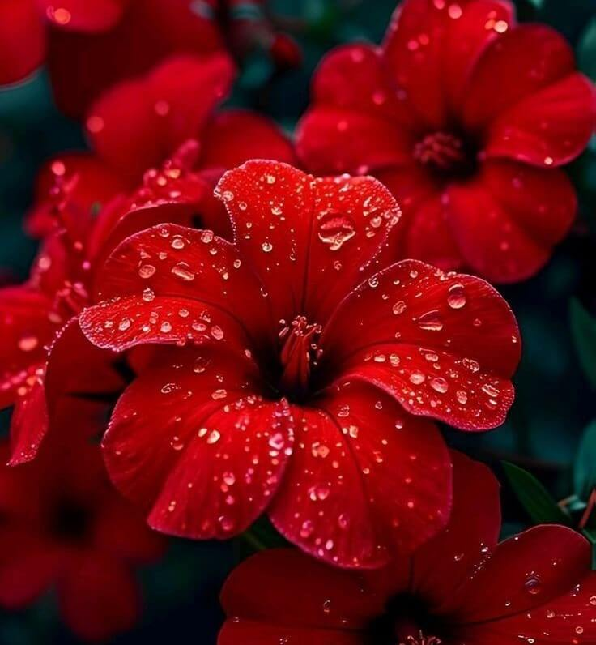
زهرة الكركديه سحر الاستوائية . تتميز بألوانها الصارخة وأوراقها الكبيرة التي تلفت الانظار من بعيد خي رمز للجمال الجرئ والجاذبية التي لايمكن تجاهلها فهي زهرة تتحمل الشمس القوية وتظل محتفظة برونقها مما يجعلها رمزا للمرأة القوية والجميلة في آن واحد